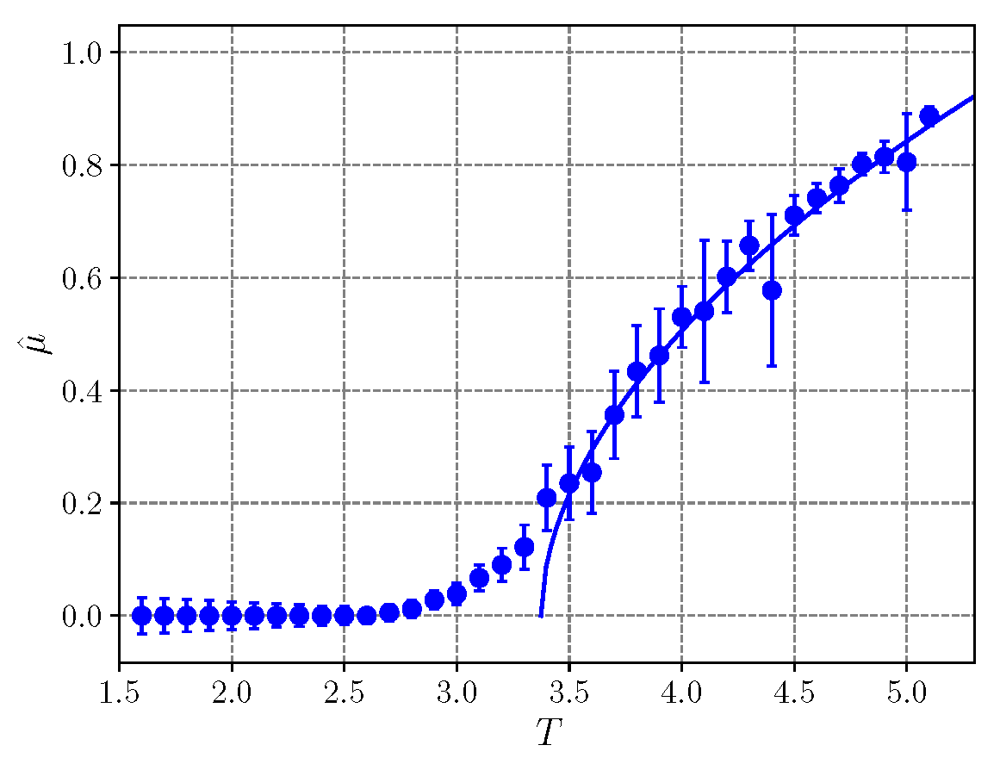
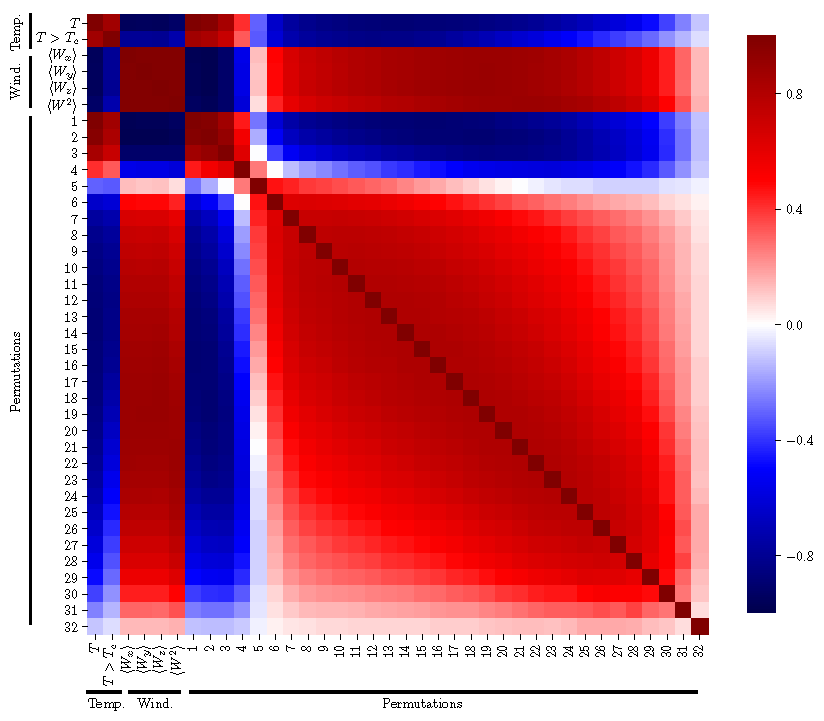

There are four Python scripts included along with the PIMC C++ code. The first is called aggregate_data.py, which takes the raw data output from the PIMC simulations and processes it for use by the other scripts. The rest of the scripts are used to find the critical temperature of the system, and implement three methods: calculation of the superfluid fraction, calculation of the permutation cycle probabilities, and a machine learning algorithm. The former two analysis methods are overviewed in Section II of this paper. The latter is expanded upon in this paper.
Before beginning to do any analysis, the default scripts require a certain folder structure. (This can, of course, be changed for your needs.) As explained on the home page, your simulation will read parameters from an input/ folder and write to an output/ folder. The various trials should be organized as follows:
/path_to_trials/number_of_particles/interaction_parameters/trial_number/,
i.e. /Users/adith/Desktop/test_cases/coulomb/32/05/1/, which then contains the input/ and output/ folders for that trial (in my naming scheme, this corresponds to a Coulomb simulation with 32 particles, interaction strength 0.5, trial 1).
Aggregating the data
In the directory that contains the various trials (/Users/adith/Desktop/test_cases/coulomb/32/05/ in the example above), create a folder (e.g. analysis/). Then, run the aggregate_data.py script with arguments for the path to the directory (i.e. /Users/adith/Desktop/test_cases/coulomb/32/05/
) and the output folder (i.e. analysis/
). This will write out files for ensemble-averaged energy, free energy, permutation, and winding data.
Running analysis scripts
To run the analyses, we can write a fairly simple script. The important thing to note is that all the analyses give the same final result (which is good). I will now run through an example of one analysis. We begin by including the analysis scripts folder in the system path and importing the necessary libraries.
import sys
sys.path.append('/Users/adith/Documents/PIMC/analysis/')
import ml_analysis
import pc_analysis
import sf_analysis
import matplotlib.pyplot as plt
import numpy as np
import pandas as pd
Next, set up the file paths necessary for your analysis. In this case, the base directory path to the various simulation data is the prefix, the files array contains the paths for different simulation parameters, num particles contains different directories for each simulation size, and the postfix is where the aggregated data is stored. The int_dict is a dictionary mapping between the files array and actual parameter values (used when making labels for plots).
prefix = '/Users/adith/Desktop/test_cases/coulomb/'
num_particles = ['32/','16/','8/']
files = ['05','1','2','5']
postfix = '/analysis/'
int_dict = {'05':0.5, '1':1,'2':2,'5':5,'10':10,'20':20,'50':50,'100':100}
Superfluid fraction method
This is an example of how to run the superfluid fraction analysis. See S.II.A.1 of this paper for physics details.
tcs_sf = [] #empty array for the critical temperatures
for file in files: # for each set of different simulation parameters
#(this loop is not necessary if you are only doing one)
## read in the aggregated winding number data
wn_dfs = []
wn_df_stds = []
## read the appropriate winding number file for each simulation size
for num in num_particles:
wn_df,wn_df_std = sf_analysis.read_input(prefix + num + file + postfix)
wn_dfs.append(wn_df)
wn_df_stds.append(wn_df_std)
## empty lists for the superfluid fractions and splines
psps = []
psp_errs = []
spls = []
## calculate temperature dependence of superfluid fraction for each size of system
## (outputs the superfluid fraction, uncertainty, and an interpolated spline)
for num in range(len(num_particles)):
psp,pspe,spl = sf_analysis.calc_superfluid_frac(wn_dfs[num],wn_df_stds[num])
psps.append(psp)
psp_errs.append(pspe)
spls.append(spl)
## find critical temperature through intersection of splines
tcs_sf.append(sf_analysis.find_interesect(psps, spls))
## plot the superfluid fraction, along with the fitted splines
sf_analysis.plot_psp(psps, psp_errs,spls, num_particles, file+'.png')
An example of the plot produced by this script is seen here. The points are the superfluid fraction of the simulation at various temperatures for 32 (red), 16 (green), and 8 (blue) particles, along with their fitted splines. The point where the lines intersect is the critical temperature. In this case, the critical temperature for the simulation (with alpha=2) was found to be 3.379.
Permutation cycle method
This is an example of how to run the permutation cycle analysis. See S.II.A.2 of this paper for physics details.
tcs_pc = [] #empty array for critical temperatures
for file in files: # for each set of different simulation parameters
#(this loop is not necessary if you are only doing one directory)
## read in input
(pc_df,pc_df_std) = pc_analysis.read_input(prefix + num_particles[0] + file + postfix)
## find mu hats and errors from the permutation cycles
# choose an appropriate alpha fit parameter (here it is 1.5, for example)
mu_hats, mu_hat_errs = pc_analysis.find_mu_hats(pc_df, pc_df_std, 1.5)
## fit the mu hat data to find critical temperatures
# choose the correct starting index for fit (here it is 25)
fit_vals = pc_analysis.fit_mu_hats(mu_hats,mu_hat_errs,25)
tcs_pc.append(fit_vals[1])
## plot mu hats vs. fit
pc_analysis.scatter_mu_hats(mu_hats, mu_hat_errs/2, fit_vals,file+'.png')
An example of the plot produced by this script is seen here. The points are the mu hats of the simulation at various temperatures for 32 particles, along with the fitted curve. Note that we fitted the points only above the critical temperature (this cutoff must be set manually, as noted in the code above). The point where the curve intersects the x-axis is the critical temperature. In this case, the critical temperature for the simulation (with alpha=2) was found to be 3.374, almost identical to the one found with the superfluid fraction calculation. 
Maching learning method
For the machine learning analysis, we need a training dataset. For this example, we use a simulation of 32 free bosons, which is not computationally taxing, and for which we know the exact critical temperature (T = 3.3125 from the Einstein formula for density = 1 and mass = 1). First we can create the input and test files from the raw data. Before doing this, create a folder combined_data/ in the same directory as the trial numbers (as above with the analysis/ folder, which is where the data sets will go.
tc_free = 3.3125
ml_analysis.create_input('/Users/adith/Desktop/test_cases/free_bosons/32/',tc_free)
for file in files:
ml_analysis.create_test(prefix+file+'/')
Next, we can preprocess the training data and visualize correlations. The preprocessing of the data uses the principle of jackknife sampling, and takes sets of 200 path configurations (this number can be changed in the code, if you wish, in the preprocess_data function), averages them, and outputs the permutation and winding statistics for each ensemble of configurations. These are the data used to train the models.
data = ml_analysis.preprocess_data('/Users/adith/Desktop/test_cases/free_bosons/32/',32,1)
ml_analysis.visualize_correlations(data)
Here are some plots for the free boson data. The first shows the distribution of below Tc (blue) and above Tc (red) ensemble averaged data for different permutation cycles. For example, the ensembles are plotted as a function of percentage of particles in 2-cycles vs percentage of particles in 3-cycles in the denoted (2,3) plot, with the color of the point dictating whether that particular ensemble was above or below Tc. We can see that some pairs of permutation probabilities display a sharp separation in critical temperature.

The second shows correlations between temperature, winding, and permutation cycles. We see that temperature is highly correlated with the presence of 1 and 2 cycles, and anti-correlated with cycles >5. We also see that temperature is heavily anti-correlated with winding. Permutation cycles of a certain size are correlated with other permutation cycles with sizes similar (i.e. 10 cycles and 9 cycles are correlated). We also see that finite-size effects start playing a role in cycles >~18. There are many other observations to draw from this plot, but these are a few of the important ones.

Moving along, these lines of code will run through sets of model parameters, from which we can choose the optimal parameters. You must then take the optimal parameters and change them in the actual code of ml_analysis.py (or you could skip this and stick with the defaults).
ml_analysis.optimize_model_class(data)
ml_analysis.optimize_model_regress(data,tc_free)
We can then make the models. The first is the classifier model (for above/below Tc) and the second attempts to predict the value T/Tc. This is implemented with SVM models, which can be cross validated to MAE ~.001 for the classifier and ~.04 for the regressor, but you can change this for another model in the ml_analysis.py file if you choose.
models = ml_analysis.make_model(data,tc_free)
Then we use the models to predict the critical temperatures.
dfs = [[] for model in models] # empty array for the predictions
crit_temps = [[] for model in models] # empty array for the critical temperatures
offsets = [0.5, 1]
for file in files:
print(file)
test = ml_analysis.preprocess_data(prefix + num_particles[0] + file + '/',int(num_particles[0][:-1]),0) # preprocess the data for predictions as done with the training data
for index, model in enumerate(models):
df = ml_analysis.predict_temperature(test,model, data.drop(['T/Tc','temperature'],axis=1).columns)
dfs[index].append([file, df])
crit_temps[index].append([file, ml_analysis.find_critical_temperature(df,offsets[index])])
The critical temperature found by this method for the same parameter as above (alpha=2) is 3.373, which is the same as by the other two methods! The machine learning model takes a lot less user input (no setting index cutoffs, etc.), but yields an identical result.
Plotting critical temperatures
A few easy plots of the critical temperature can be made by running a function in the ml_analysis script.
#scatter plot of the permutation cycle results vs sim parameters (defined by file->int_dict dictionary)
ml_analysis.scatter_tcs(np.array([files,tcs_pc]).T, int_dict, [.3,6], [2.8,3.8])
#scatter plot of the superfluid fraction results vs sim parameters (defined by file->int_dict dictionary)
ml_analysis.scatter_tcs(np.array([files,tcs_sf]).T, int_dict, [.3,6], [2.8,3.8])
#for each ML model
for index, _ in enumerate(models):
#scatter plot critical temperature results vs sim parameters (defined by file->int_dict dictionary)
ml_analysis.scatter_tcs(crit_temps[index],int_dict, [.3,6], [2.8,3.8])
Support or Contact
If you have trouble running this code, or have corrections or suggestions for improvement, please contact me at adith.ramamurti [at] alumni.stonybrook.edu and I’ll get back to you as soon as I can. Any input is welcome!